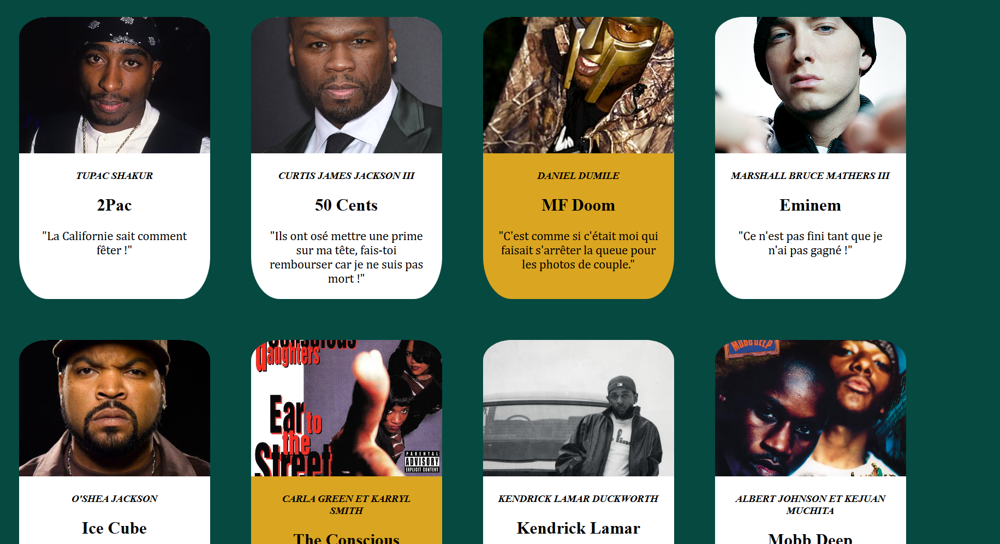
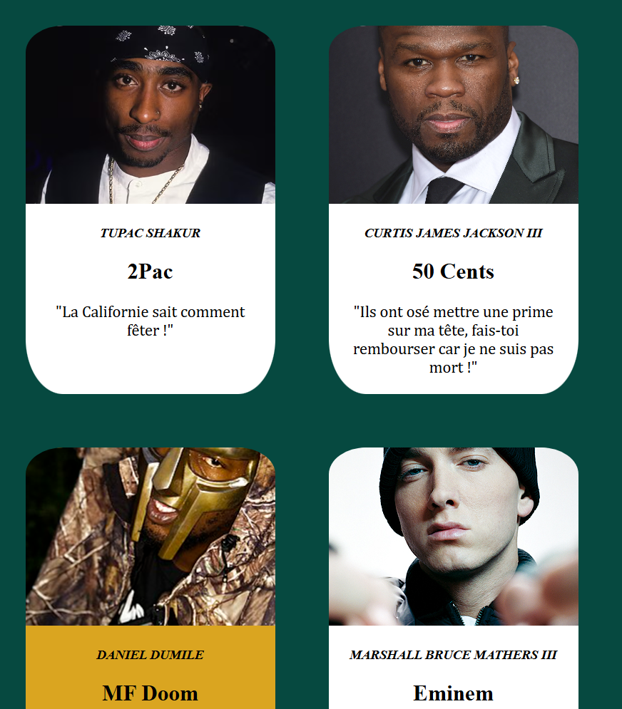
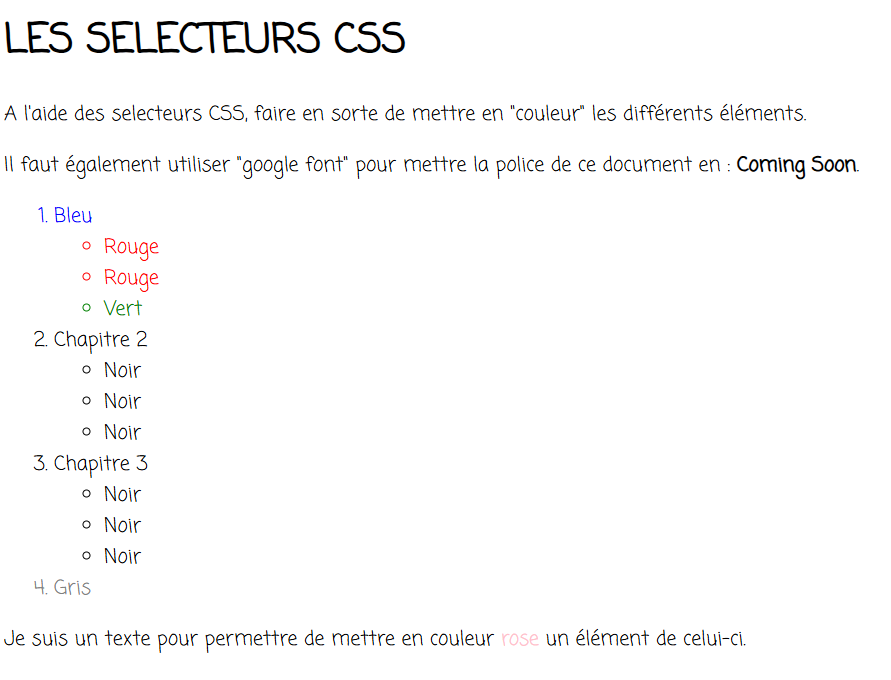
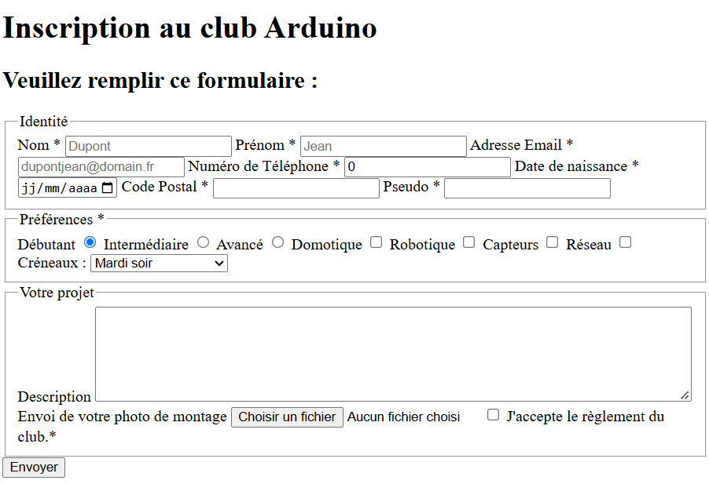
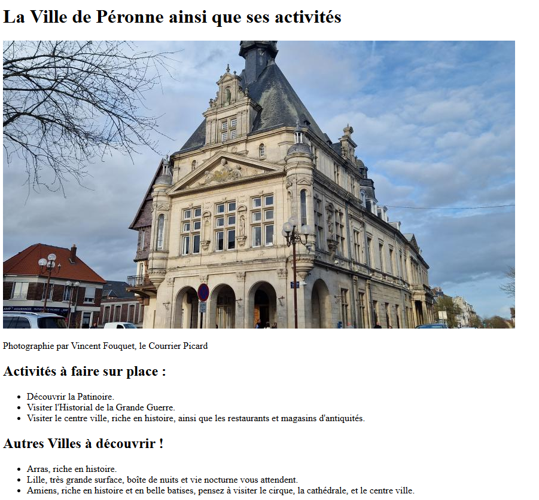
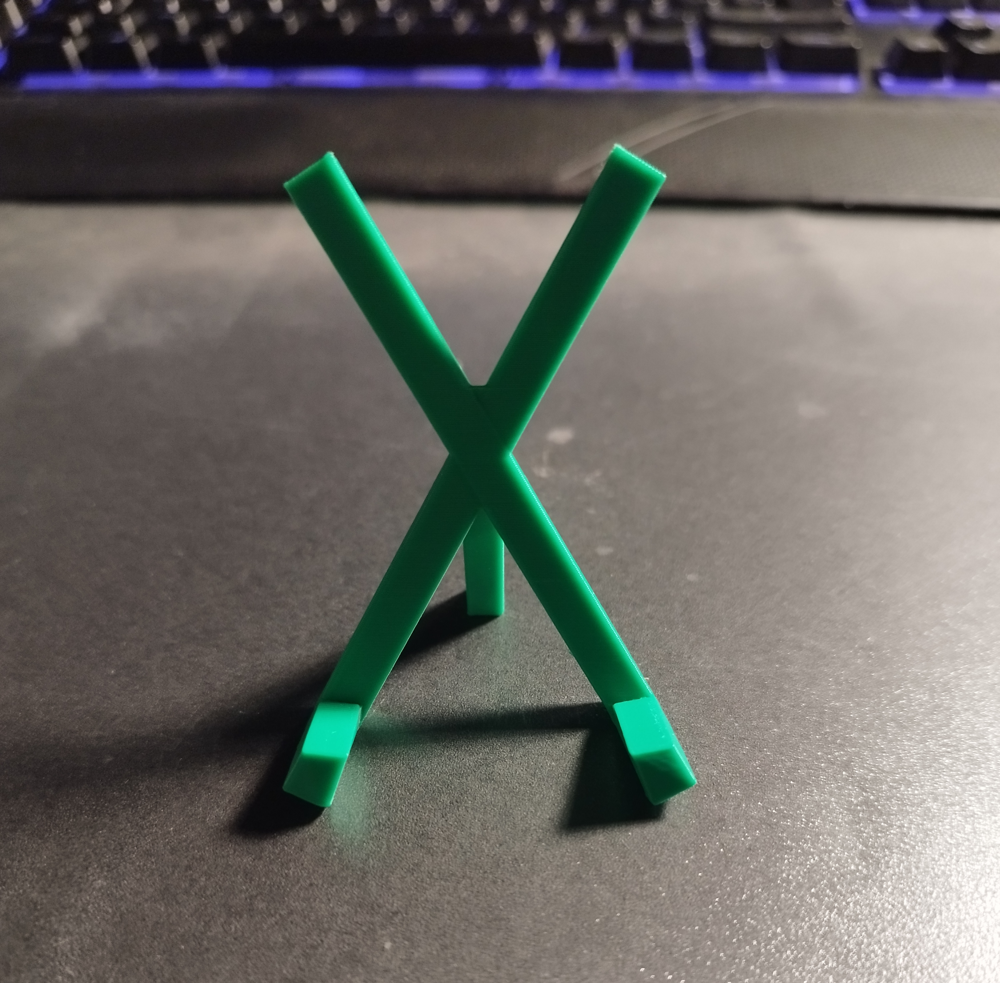
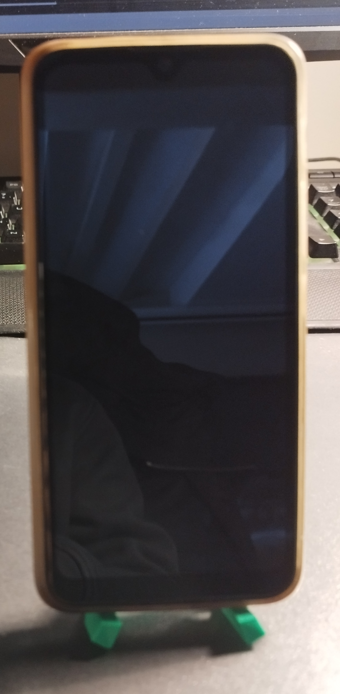
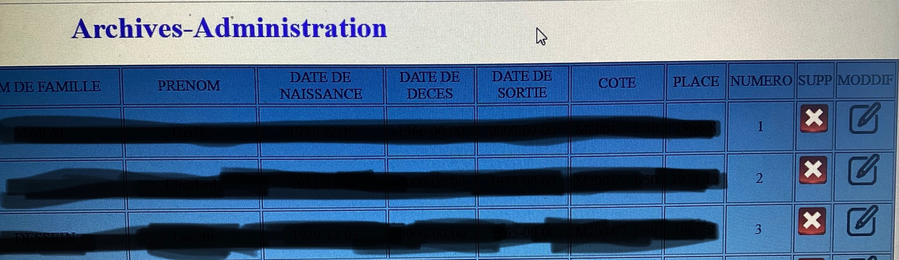
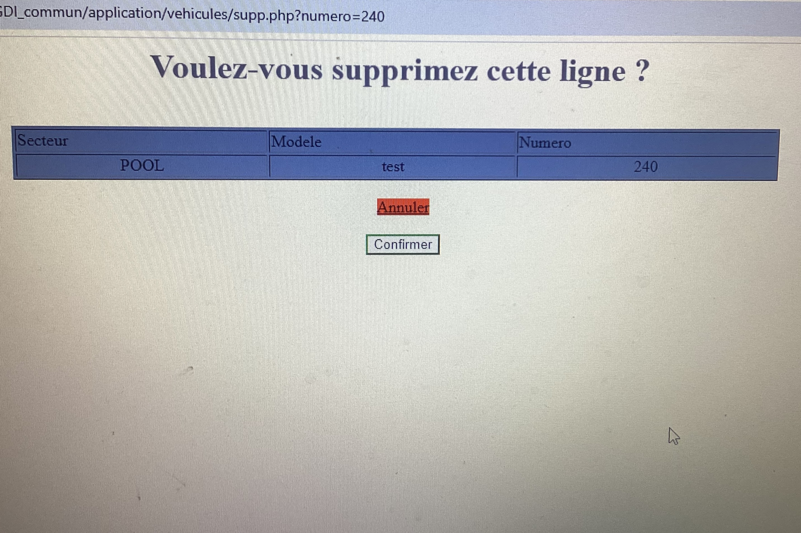

Mes réalisations
En formation
Le TP cartes, TP permettant la découverte et la mise en place des flexbox, servant à la mise en place en rangées ou en colonnes d'éléments HTML. Cela permet aussi de s'adapter en fonction de la taille de la page.
Découvrir le TP

TP "sélecteurs", permet d'apprendre les différences entre les classes, attributs et balises que l'on peut utiliser avec CSS.
Découvrir le TP
TP "validation et envoi d'un formulaire", nous a permis d'apprendre les balises permettant de réaliser un formulaire de contact, ou d'inscription par exemple. Cela permet à la personne réceptionnant ce formulaire d'avoir des informations comme le nom, le prénom ou encore le numéro de téléphone... On peut renseigner si on s'attend à une adresse mail, un numéro de téléphone et rendre notre expérience utilisateur plus agréable.
Découvrir le TP
Le TP HTML, qui nous a permis d'apprendre les bases du HTML, j'ai appris à implémenter de multiples balises utiles à la création d'un site internet, comme la balise h1, img, et bien d'autres encore.
Découvrir le TP
Tutoriel d'installation, pour ceux qui préfèrent une vidéo, on a ce qu'il faut, dans cette présentation, notre équipe de 3 vous explique en anglais comment installer Python sur votre machine, comment vérifier qu'il fonctionne, et l'ajouter à votre Visual Studio Code.
Impression 3D
L'Impression 3D, une doctrine me passionnant depuis peu, a permis de développer mes compétences en modélisation 3D, mais aussi en préparation, anticipation, et, quand l'imprimante est régulièrement entretenue, on prend bien plus de plaisir à pratiquer cette passion.
Voici un exemple d'une de mes réalisations


Projets Personnels
Python, après avoir appris Python en autodidacte et à l'école, je me suis permis de faire multiples projets personnels, comme un trieur de fichiers automatique, ou encore un cookie clicker (jeu où le but est d'avoir le plus de cookies en cliquant dessus).
Lua, après avoir appris Lua en autodidacte, je me suis permis de faire multiples projets personnels sur Roblox Studio, logiciel d'application de ce langage. C'est réellement ce language et cet éditeur qui a développé cette passion pour l'informatique et la création numérique qui sommeillait en moi. Vous trouverez ici un devlog en anglais d'un de mes anciens projets, un jeu où un géant doit attraper des joueurs plus petits.
Projets Réalisé dans un Cadre Professionel
Les Bases de données de l'hôpital psychiatrique de la Somme à Amiens peuvent être visionnées à travers une page web développée en HTML, CSS et comporte surtout un côté back en PHP, permettant la communication entre le site web et la base de données. Aujourd'hui, bien qu'un autre développeur soit passé par mon code, c'est toujours mon programme qui est en vigueur dans leur établissement. J'ai notamment développé un outil permettant d'ajouter, de modifier et de supprimer un véhicule dans la base de données (immatriculation, modèle).

